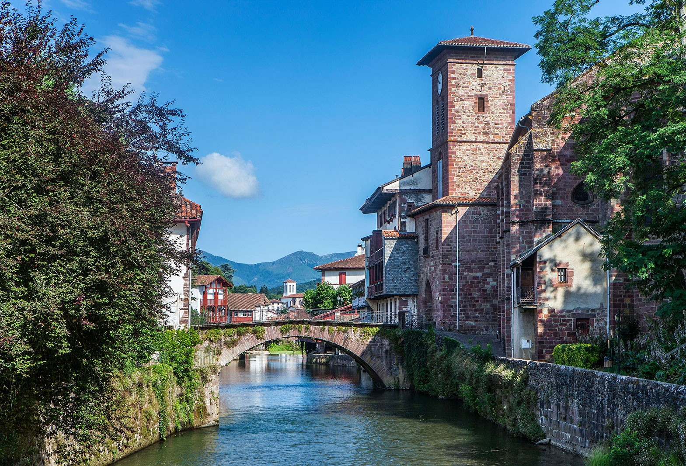
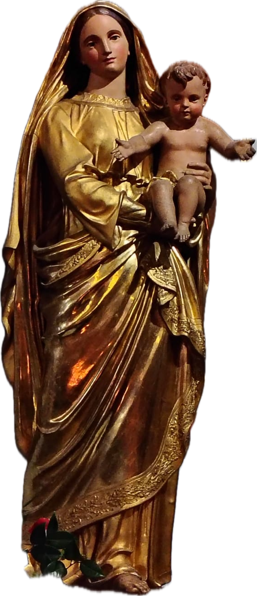

FEDEZ IBIL (avancer de par la foi, se conduire selon la foi) vous propose de vivre l’expérience d’un pèlerinage traditionnel dans un esprit de ferveur et d’authentique amitié chrétienne. Prières et Cantiques traditionnels basques et français nous permettront d’exprimer notre Foi en Dieu et notre Espérance du Salut avec le secours de Notre-Dame. Nous voulons ainsi retisser les liens qui de tout temps ont uni Foi et culture traditionnelle locale. Pendant ce pèlerinage, nous recevrons les sacrements de l’Eglise sous leur forme tridentine.

FEDEZ
IBIL

